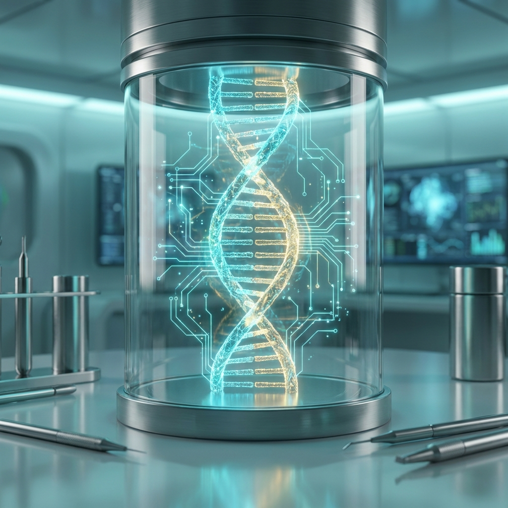

// DIRECT ANSWER
NovaGenAI builds autonomous AI agents. Not chatbots. Chatbots follow scripts and escalate to humans. AI agents independently plan, reason, use tools, access business systems, retrieve knowledge, coordinate with other agents, and complete multi-step tasks without human intervention.
40+ specialised agents across 12 departments at CryoCord Group — sales operations, compliance, customer service, document processing, data analysis — all autonomous. Most 'AI agents' are chatbots with better branding. Ours maintain state, use tools, coordinate in parallel, and operate within enterprise guardrails.
// AI AGENT CAPABILITIES

Trilingual autonomous voice agents. Real customer calls. Bookings. Enquiries. 24/7. RAG-backed. 85% deflection at CryoCord. Intelligent conversation.
RAG-powered agents searching, analysing, cross-referencing thousands of documents. Contracts. Medical records. SOPs. Indexed in seconds. Source citations.
40+ specialised agents coordinated in parallel. Task assignment. Dependency resolution. Result synthesis. Quality validation. All orchestrated automatically.

End-to-end processes: qualify lead → enrich CRM → generate proposal → schedule follow-up → log to ERP. 60% reduction in manual sales operations.
Reading and writing through SAP, Oracle, Dynamics, Salesforce, HubSpot via APIs. No rip-and-replace. Agents work alongside your current stack.

Healthcare. Biotech. Finance. Manufacturing. Trained on your data. Deployed in your infrastructure. They understand your domain's terminology and workflows.
// DIFFERENTIATION
Chatbots follow decision trees and break on edge cases. Our agents plan, reason, and adapt. Unexpected question? Retrieved knowledge, reasoned response. Edge case? Agent adapts.
Audit logging for every decision. Human-in-the-loop for sensitive actions. Role-based access. Rate limiting. Hallucination detection. Built for healthcare, finance, compliance.
40+ agents. 12 departments. 29+ staff relying on them daily. 85% call deflection. 60% manual work reduction. Not a pilot. Enterprise AI infrastructure.
Our agents query databases, update CRM records, send emails, generate reports, trigger workflows, call APIs. An agent that can only chat is a toy. An agent that does work is infrastructure.
// FAQ